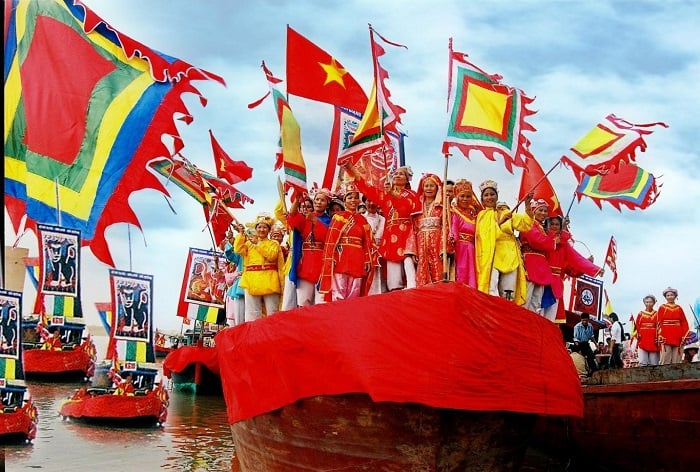

1. Lễ hội Festival biển Nha Trang

Festival biển Nha Trang là gì? Đây là một hoạt động quan trọng để quảng bá hoạt động văn hóa du lịch của địa phương tới du khách trong nước và quốc tế. Lễ hội kéo dài từ 4-5 ngày với nhiều hoạt động sôi nổi, hấp dẫn tôn vinh nét đẹp, văn hóa của con người Nha Trang như:
Lễ hội Cầu Ngư.
Hội thi thuyền rồng.
Lễ hội ẩm thực.
Trò chơi dân gian.
Hội thảo khoa học.
Triển lãm ảnh nghệ thuật.
Trình diễn thời trang.
Trình diễn văn hóa nghệ thuật.
Trình diễn thể thao.
Trình diễn pháo hoa.
Trình diễn nghệ thuật đường phố.
Trình diễn nghệ thuật ẩm thực.
Trình diễn bắn pháo hoa .
Lễ hội Festival biển Nha Trang mấy năm có 1 lần?
Lễ hội Festival Nha Trang được tổ chức lần đầu vào năm 2003 và được tổ chức định kỳ 2 năm 1 lần vào mùa hè. Đến với lễ hội Festival biển Nha Trang du khách sẽ được chứng kiến các hoạt động lễ hội, văn hóa, nghệ thuật đặc sắc với sự tham gia của nhiều ca sĩ, diễn viên, nghệ sĩ nổi tiếng.
Lưu ý: nếu bạn muốn tham gia các lễ hội ở Nha Trang vào các mùa cao điểm thì nên chủ động đặt vé máy bay/tàu/xe và phòng khách sạn sớm để tránh tình trạng hết phòng hoặc hét giá cao khi đặt sát ngày.
2.Lễ Hội Cá Voi ở Nha Trang
Thời gian: Ngày ông lỵ (cá voi chết) và hai kỳ xuân tế, thu tế.
Địa điểm: Lăng Ông, thành phố Nha Trang.

Đối với người dân vùng biển Nha Trang, từ lâu cá voi đã là một sinh vật hiền lành, quý hiếm, thường giúp đỡ ngư dân khi gặp nạn trên biển nên rất đáng để được tôn kính, suy tôn. Người dân địa phương thường tránh gọi thẳng tên cá voi mà thay vào đó là “Cá Ông” hoặc “Ông Nam Hải”.
Thậm chí, để thể hiện sự tôn kính ngư dân còn xây lăng thờ cúng (lăng Ông) và tổ chức lễ hội ở Nha Trang hàng năm hết sức thành kính và tôn nghiêm.
Lễ hội Cá Voi ở Nha Trang bao gồm các hoạt động như:
Nghi lễ tế đình cầu mưa thuận gió hòa, mong ngư ông che chở để sóng yên biển lặng, đánh bắt thuận lợi, bình an.
Thả thuyền hoa, thuyền rồng trên biển.
Thả đèn hoa đăng.
Lễ hội Festival Nha Trang được tổ chức lần đầu vào năm 2003 và được tổ chức định kỳ 2 năm 1 lần vào mùa hè. Đến với lễ hội Festival biển Nha Trang du khách sẽ được chứng kiến các hoạt động lễ hội, văn hóa, nghệ thuật đặc sắc với sự tham gia của nhiều ca sĩ, diễn viên, nghệ sĩ nổi tiếng.
3.Lễ Hội Cầu Ngư
Lễ hội Cầu Ngư Nha Trang là tập tục lâu đời của ngư dân vùng biển bắt nguồn từ tục thờ ông Nam Hải (cá voi). Lễ tế Ông Nam Hải ngày nay được gọi là lễ hội Cầu Ngư.
Thời gian: 3 ngày đêm vào tháng 2 hoặc tháng 3 âm lịch.
Địa điểm: Toàn làng và ngoài biển, tâm điểm là Lăng Ông.
Hoạt động nổi bật:
Lễ Nghinh Ông (Lễ nghênh thủy triều)
Lễ Tỉnh sanh
Trò diễn dân gian Hò Bá trạo
4. Lễ hội Khỉ
Lễ hội Khỉ (còn được gọi là Lễ hội Hoa Quả Sơn) được tổ chức để kêu gọi bảo vệ môi trường, chung tay bảo vệ hệ sinh thái biển đảo. Đây là một trong những lễ hội ở Nha Trang độc đáo, thu hút đông đảo du khách nhờ các hoạt động vui nhộn liên quan đến khỉ.
Thời gian: Hàng năm (thời gian cụ thể có thể thay đổi).
Địa điểm: Đảo Khỉ, Nha Trang.
Hoạt động nổi bật:
- Lễ rước trên biển với cano, jetski chở khỉ dẫn đầu đoàn rước, theo sau là thuyền chở du khách ra đảo.
- Biểu diễn xiếc khỉ, đua chó và các trò chơi dân gian.
- Giao lưu trực tiếp với khỉ trên đảo.
5. Lễ hội Tháp Bà Ponagar

Lễ hội Tháp Bà Ponagar là một trong những lễ hội lớn tại Nha Trang, nhằm tưởng niệm nữ thần Thiên Y A Na Thánh Mẫu – người có công tạo lập xứ sở, duy trì nòi giống, tìm ra cây lúa và dạy dân cách canh tác. Đây cũng là dịp để người dân cầu nguyện cho quốc thái dân an.
Thời gian: Ngày 20 - 23 tháng 3 âm lịch hàng năm.
Địa điểm: Di tích Tháp Bà Ponagar - phường Vĩnh Phước, tỉnh Khánh Hòa, thành phố Nha Trang.
Hoạt động nổi bật:
- Lễ thay y với nghi thức dâng nhang, trầm hương, trái cây, hoa.
- Lễ thả hoa đăng trên sông cầu siêu cho các vong linh.
- Lễ cầu quốc thái dân an và cúng thí thực trang nghiêm.
6. Lễ hội Du thuyền Quốc tế Nha Trang
Nha Trang từ lâu đã được xem là một trong những vịnh biển đẹp nhất ở Việt Nam và nổi tiếng trên thế giới. Do vậy, đây cũng là điểm đến tiềm năng của các du thuyền, thuyền buồm quốc tế. Lễ hội Du thuyền Quốc tế Nha Trang là dịp quy tụ hàng chục câu lạc bộ du thuyền đến từ 22 quốc gia trên thế giới như Singapore, Thổ Nhĩ Kỳ, Brunei, Dubai, Canada, Mỹ, Brazil, Argentina, Nam Phi, Trung Quốc, Đức, Italia, Pháp,... và các doanh nhân sở hữu du thuyền cao cấp, các công ty chế tạo du thuyền.
Thời gian: Không cố định (thường tổ chức theo sự kiện quốc tế).
Địa điểm: Vịnh Nha Trang.
Hoạt động nổi bật:
- Trưng bày và diễu hành du thuyền trên biển.
- Giao lưu văn hóa giữa các đoàn du thuyền quốc tế.
- Các hoạt động trải nghiệm trên biển dành cho du khách.